透過客製化熱量平衡與狀態即時化，重塑現代外食族無負擔的點餐體驗
/* 問題 */
線下實體數位化轉型遲滯，無法跟上現代人需求
Subway 在 2010 年成為全世界最多連鎖店的三明治品牌。隨著數位時代興起及顧客飲食習慣的改變，「新鮮」和「健康」已經不是顧客唯一關心的部分。
當代外食族生活節奏緊湊且高度注重飲食健康，在臨櫃點餐或傳統點單時面臨三大關鍵斷點：
- 選擇障礙焦慮：客製化步驟多達 6 步，隊伍後方凝視造成臨櫃壓力。
- 熱量資訊斷層：缺乏即時累計，無法在美味與體態管理間取得平衡。
- 門市現況黑盒子：現場缺料或尖峰排隊無從得知，撲空造成強烈挫折。
目標摩擦點：嚴重性高
/* 解決方案 */
以即時熱量回饋與備餐透明化，建構「自適應線上點餐生態」
打造 Subway iOS 點餐系統，把複雜的客製化流程解構為清晰引導，並賦予使用者對自身營養攝取與取餐節奏的掌控感。
透過提供餐點推薦與熱量顯示，讓使用者在整個訂餐過程中能放心且快速完成點餐，有個無憂無慮挖掘美食、平衡罪惡感的點餐經驗。
- 即時客製化熱量條：配料增減隨時重算，動態色條呈現警戒與平衡。
- 智慧餐點需求推薦：以「增肌/低碳/美味不忌口」情境快速切入。
- 門市人潮與庫存可視化：即時標註備餐等待分鐘數與食材售完預警。
- 色彩代碼快速取餐：取餐單採用雙色塊與顯著編號，店員 3 秒核對。
設計假設：在可用性驗證中驗證
/* 流程 */
本案研究的流程
本案分為上下兩篇。本篇包含探索、洞察、問題定義＆發想與原型；若想查看易用性測試、迭代後原型與學習與挑戰，請點擊此處。
1探索
設計人們願意使用的線上點餐服務
這階段我以顧客與市場探索幫助我完成以下目標：
顧客探索了解目標族群有哪些驗證初步假設了解外食影響因素線上平台的體驗感受
/* 市場調查 */
我可以做得更好嗎？
藉由販賣同商品的平台與同為速食的專賣平台作競爭者分析，分別進行認知走查與易用性調查，釐清設計目標是否幫助使用者輕鬆解決問題，同時確認既有的解決方式。深入分析台灣主流外送平台與餐飲直營應用程式，歸納出當前市場在「高度客製化」與「進度掌握」上的系統性缺口。
外送聚合應用程式
斷點 1：滑動方向與介面階層不一致水平橫滑推薦與垂直直滑選單穿插，導致客製化流程（選麵包、蔬菜、醬料）在長表單中被截斷，跳出率高。
斷點 2：缺乏營養與食材標示細節僅以純文字核取方塊條列配料，無法看到醬料卡路里或鈉含量，對控糖或健身族群極不友善。
客製化完整度：低（僅限單選/複選表單）
直營品牌專賣應用程式
斷點 1：無法掌握門市即時製作負載訂單送出後僅顯示預估「約 15 分鐘」，無法即時得知店內正處於尖峰或現場已無某項特殊麵包。
斷點 2：預約機制僵化與取餐核對慢到店後仍需尋找收據或報手機末三碼，在嘈雜人潮中常常造成店員翻找餐點與使用者等候的雙重延遲。
透明度與狀態即時回饋：中等（定時刷新，缺乏微狀態）
| 維度 | 外送聚合應用程式 | 直營品牌專賣應用程式 | Subway 設計案（本案） |
|---|
| 客製化步驟指引 | 長表單核選（易漏選） | 步驟分頁（稍嫌冗長） | 步驟導覽＋即時動態條 |
| 熱量/營養即時回饋 | 無（僅靜態熱量文字） | 無（需另外查營養表） | 隨選隨增減（即時數值） |
| 取餐識別與防呆 | 訂單號碼純文字 | 條碼 / 取餐號 | 色彩編碼＋大字號動態單 |
/* 顧客探索 */
線上點餐需提供哪些服務來提升造訪率？
初步假設：如果提供下列服務，消費者會更頻繁造訪 Subway 平台提供餐點熱量供參考明確的餐點等候時間店家、餐點現況（供應餐點、人潮、等候時間）趨勢與話題的品牌認同度（新商品、聯名商品）
/* 問卷洞察 */
篩選目標族群與了解消費者的飲食習慣
以 Google 線上問卷回收 80 份質性與量化混合問卷，收集基本資料、外食頻率、考量因素及購買方式，同時了解線上訂餐系統的使用因素與痛點。
購買方式
次級研究發現手機點餐有成長趨勢，Subway App 有發展的必要
考量因素
美味度與 Subway 客戶主要購買原因相符
/* 使用者訪談 */
你能告訴我你購買 Subway 的過程嗎？
透過問卷邀請了 5 位對購買 Subway 具有不同熟悉度的人進行訪談，數據揭示了強烈的需求矛盾：渴望方便，卻飽受點餐壓力與健康焦慮折磨。
目標族群每週外食 6 天以上重視健康與美味度15~29 歲女性購買過 Subway
訪談目標了解挑選餐點的考量因素和過程揭示人們可能面臨的常見痛點如何使用應用程式或網站幫助他們實現目標
操作方式實際操作：於店面或線上購買微表情觀察：追問當下行為與情緒開放式問答：對現有管道的想法與痛處
訪談畫面
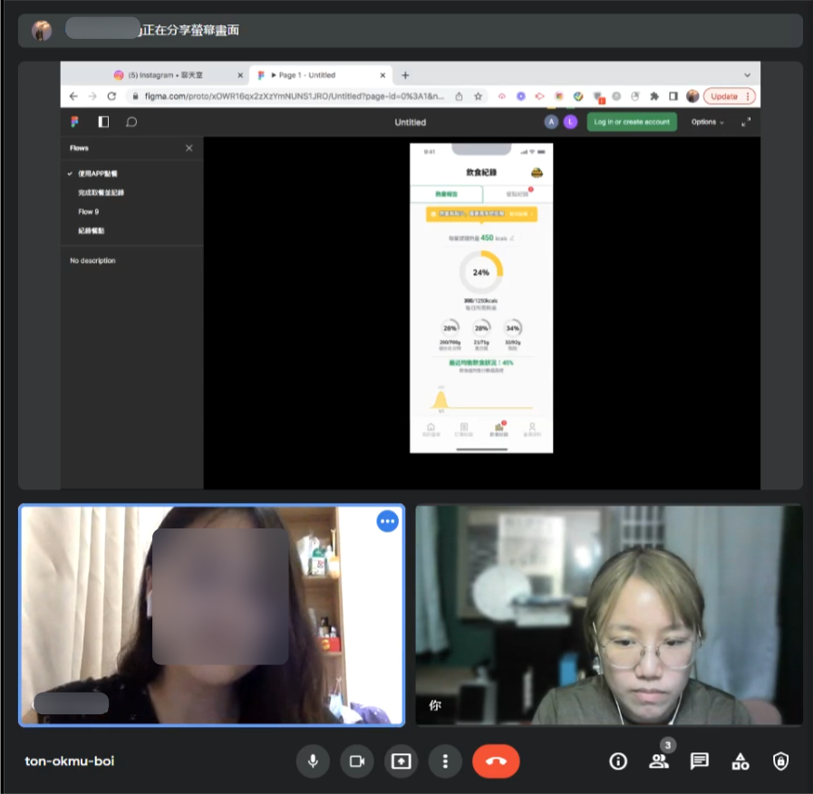
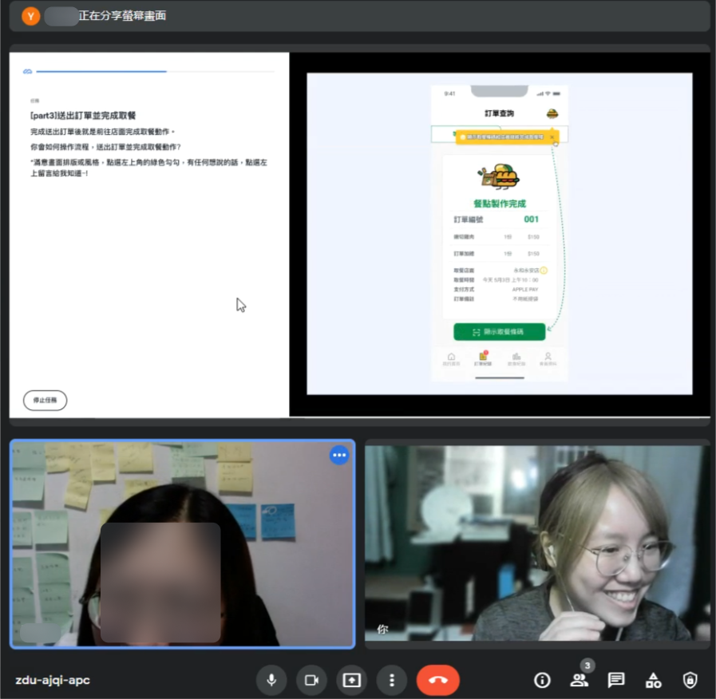
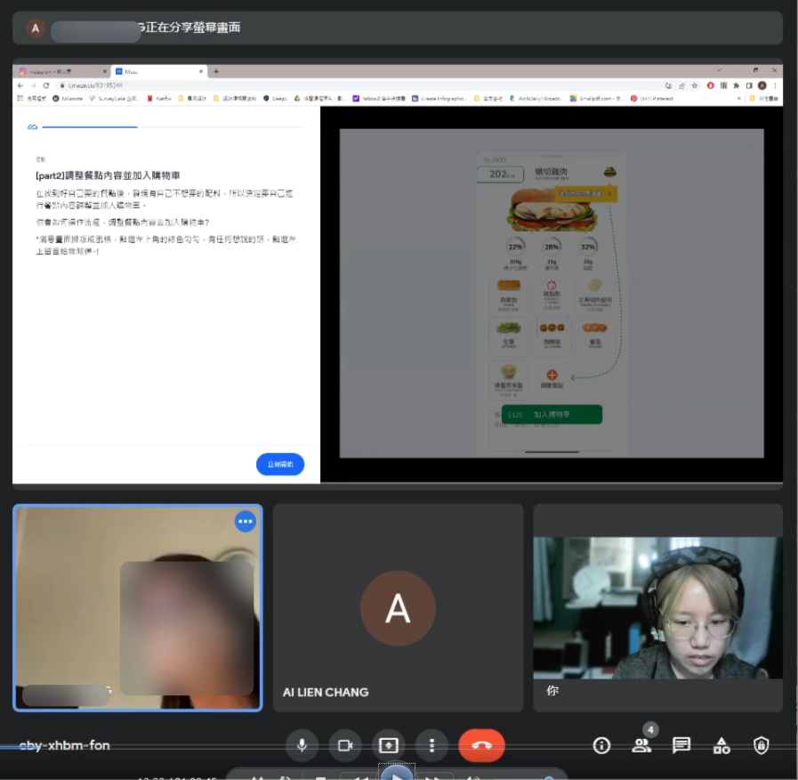
訪談見解
將訪談數據整理成使用者的行為、思考和感受後，得出關鍵見解：
餐點敘述標示不清
assets/05-insight-1-menu-labels.png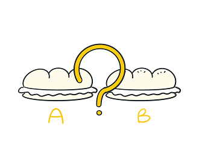
/* 洞察 1 */
餐點與配料標示不清3 位受訪者有此困擾，無法從餐名知曉內容物並立即判斷點餐內容，難以快速判斷並點餐。
無法掌握店家現況
assets/05-insight-2-store-status.png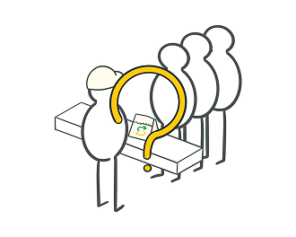
/* 洞察 2 */
不清楚門市現況而撲空4 位受訪者到了店家才知道人潮多寡或商品已售完，缺乏門市現場即時負載與原料庫存資訊，感到沮喪和無奈，是使用者放棄消費的主因。
期望看到餐點熱量
assets/05-insight-3-calories.png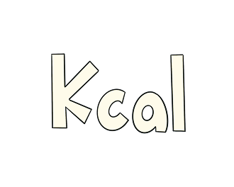
/* 洞察 3 */
自選時想即時看到熱量受訪者皆認為熱量有助於他們挑選餐點並感到安心，熱量數據不該是事後的懲罰或獨立的 PDF 查閱表，而應該是「當下幫助決策」的心理錨點。
2洞察
重新檢視假設
根據調查與訪談的見解重新檢視初步假設，修正用字並更精確聚焦在主要影響使用者的項目上，確保設計決策以使用者為中心，並幫助建立人物誌。
| 初步假設 | 修正假設 |
|---|
| 提供餐點熱量供參考 | 提供餐點熱量與內容敘述，以快速了解餐點 |
| 明確的餐點等候時間 | 明確的點餐介面、指引與內容，加速點餐效率 |
| 店家、餐點現況（供應餐點、人潮、等候時間） | 店家、餐點現況（供應餐點、人潮、等候時間） |
| 趨勢與話題的品牌認同度（新商品、聯名商品） | 提供餐點篩選服務，幫助餐點選擇 |
/* 人物誌 */
三位代表人物：以 Mia 為主要角色
依據訪談資料提煉出代表性人物誌「無固定飲食習慣的大學生 Mia」——在控制身材與犒賞自己之間拉扯，期望快速滿足口腹之慾卻害怕踏入選餐地雷；Bella 與 Daya 為次要角色。
Mia 人物照片
assets/06-persona-mia.png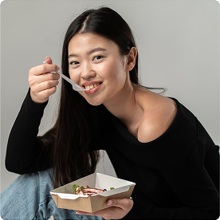
吃貨沒有固定飲食方式好奇心強
「如果有人能先幫我算好、配好，我只要按兩下手機，就能在去學校的路上抓了就走，這才是理想的數位點餐。」
關鍵痛點
- 不想在人群前慢慢研究醬料成分
- 到店才發現缺料，臨時改菜單很焦慮
- 擔心點了高熱量醬料，下午充滿罪惡感
目標需求
- 找到快速、清爽不油膩的餐點
- 清楚知道一餐的熱量與蛋白質
- 課間 20 分鐘內準時拿到餐點
對應應用程式功能
依需求推薦餐點建議熱量條掌握店家即時情況快速取餐辨識
Bella｜正在改變飲食習慣
次要角色26 歲・雜誌社編輯・台北獨自租屋
Bella
人物照片
assets/06-persona-bella.png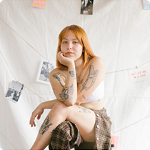
「減重的同時，能夠建立健康飲食觀念，讓身材變好的同時，也能變得更加健康。」
關鍵痛點
- 持續漸進減重，找到適合自己的飲食型態
- 減重後維持良好體態
目標需求
- 想要小份、清爽、無澱粉的選擇，午餐常是大份主餐加澱粉，吃不完
- 為了控制攝取，需要看到餐點熱量與內容標示，也擔心吃到牛製品
- 不清楚飲食上該注意什麼，又不想花時間調查
對應應用程式功能
依需求推薦餐點建議熱量條餐點內容標示與篩選
Daya｜有固定飲食習慣
次要角色28 歲・遠端工作者・台北租屋且與室友同住
Daya
人物照片
assets/06-persona-daya.png
「找到符合自己飲食需求的餐廳，又同時能解決選擇障礙困擾，是目前最大的需求！」
目標需求
- 外食菜色少又油，自己開伙又花時間
- 希望有店家能讓她自己搭配均衡飲食
- 有選擇障礙，希望有健康餐點推薦
- 運動後或不知道吃什麼時會選超商，方便快速，但餐點內容固定、選項少
/* 使用者旅程地圖 */
Mia 對 Subway 的體驗感到如何？
目標省時省力地用線上點餐系統點餐並前往店家取餐。期望流程具備：快速點餐、明確的取餐時間、適合自己的餐點選項。
背景夏季接近中午時，Mia 在學校想來點清爽低熱量的餐點，為了避開人潮，決定先線上點餐再到店面取餐。
使用者旅程地圖
assets/08-journey-map.png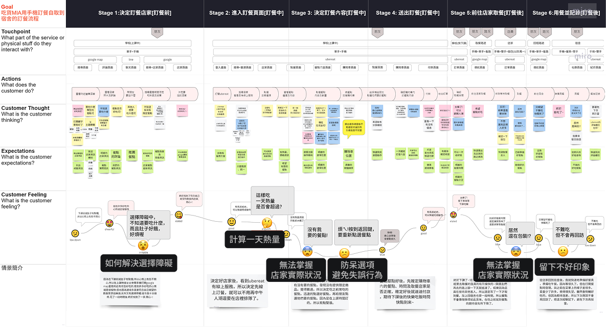
/* 洞察見解 */
影響使用者心情的痛點與假設
依峰終定律，將對使用者留下印象的關係強度依序排列：
最後一步驟｜無法掌握店家實際狀況明確的店家、餐點實際狀況（供應餐點、人潮狀況、等候時間）掌握店家即時情況
快樂高峰｜無法有效選擇餐點提供餐點篩選服務；提供餐點熱量與內容敘述依需求推薦餐點建議熱量條
整體流程｜點餐順序雜亂明確的點餐介面、指引與內容，加速點餐效率簡化重複點餐的流程快速取餐辨識
3問題定義＆發想
/* POV */
問題陳述的修訂
根據假設問題與人物誌的陳述，定義整個專案的目標，以更好地與使用者需求保持一致。
「常使用社群的吃貨大學生 Mia，需要一個可以讓她無憂無慮挖掘美食、平衡罪惡感的點餐經驗，因為吃美食是她的快樂來源之一，但吃多身材走樣導致的焦慮感，會影響她獲取吃美食的快樂。」
/* HMW */
如何找到關鍵 HMW？
通過 10 大激盪方向發想專案問題與可能的領域，找學習 UI/UX 的朋友投票獲取反饋，並依對專案的重要性與點餐流程排列，找出能提供最大效益的點子。
HMW｜10 大激盪方向與投票結果
assets/09-hmw-brainstorm.png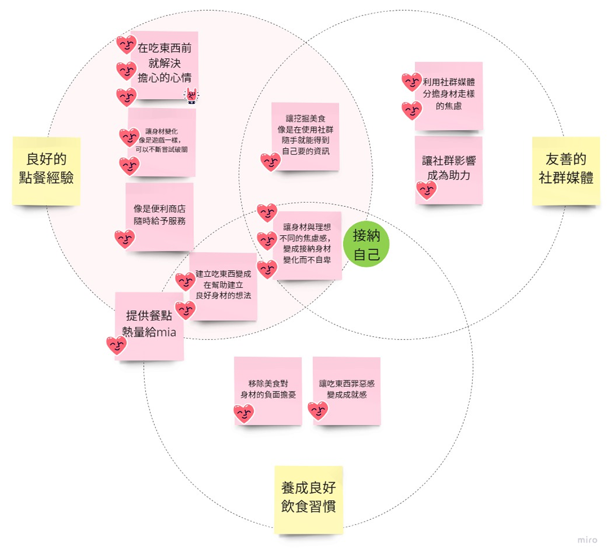
「我們何不提供可以快速依需求調整的客製化餐點選項，去幫助在意體態變化的 Mia 滿足需求？」
如何決定發展點子？
以 Crazy8 快速發想並投票，再依點子對使用者及商業端的重要度篩選，找到能發揮最大效益的點子。
快速發想｜Crazy8
assets/10-ideation-crazy8.png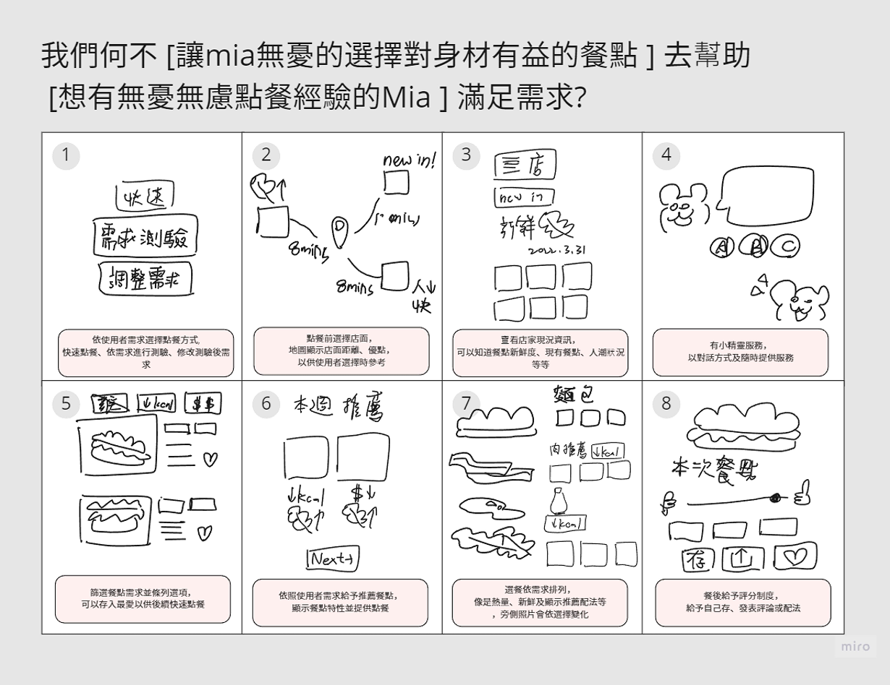
/* 快速發想 */
Crazy8進行快速發想，找到切入方向
收斂發想｜四象限圖
assets/11-ideation-matrix.png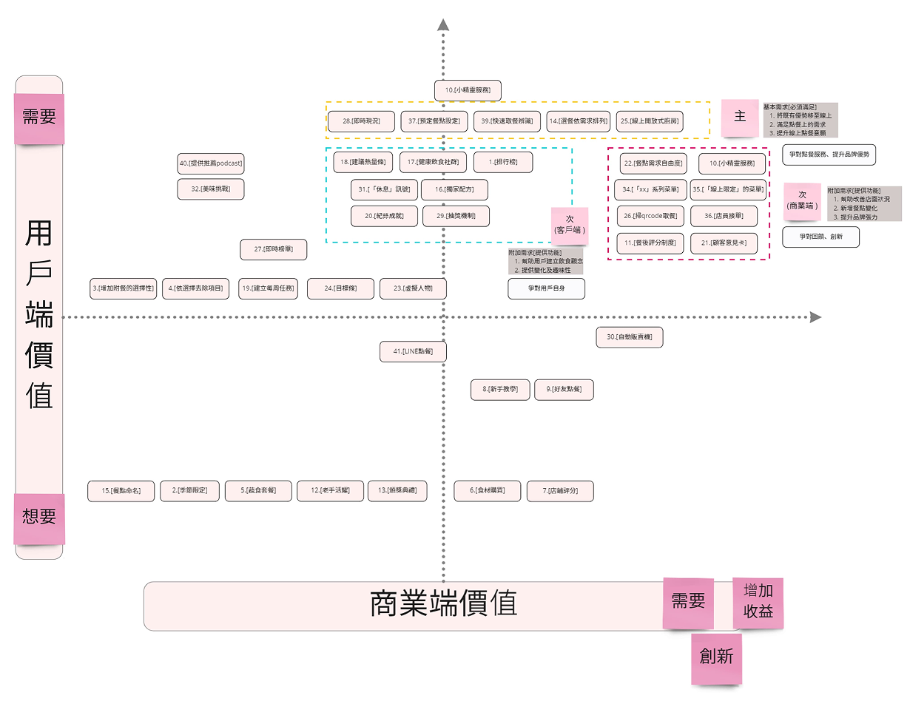
/* 收斂發想 */
四象限圖篩選與排序對使用者端及商業端有高影響度的 HMW
收斂發想｜點餐流程與重要程度
assets/12-ideation-flow-priority.png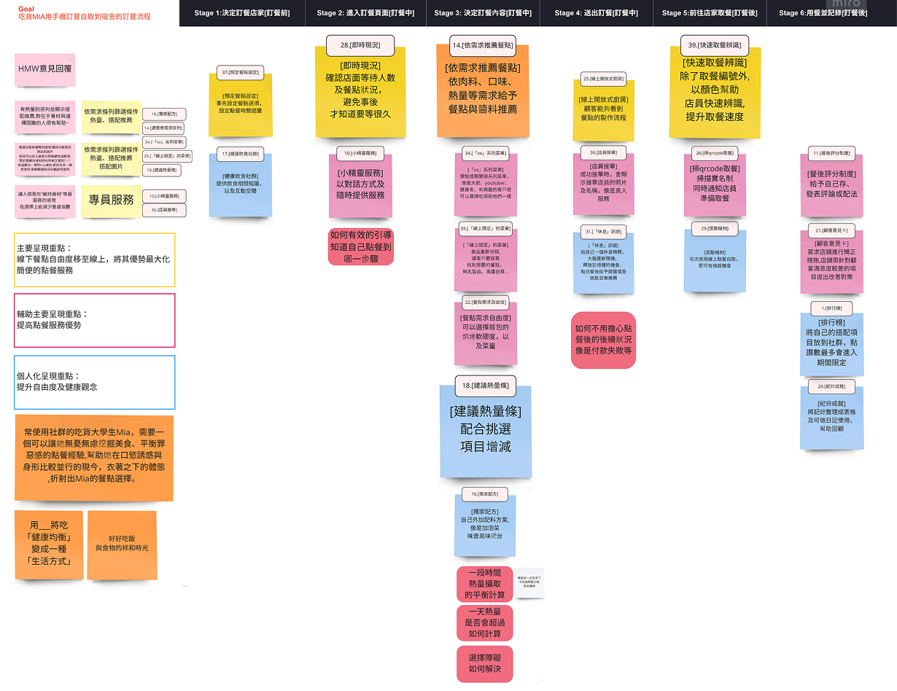
/* 收斂發想 */
點餐流程與重要程度依重要度排列，選出能幫助 Mia 的點子
什麼對 Mia 最有幫助？
/* 功能 1 */
依需求推薦餐點依肉料、口味、熱量等需求給予餐點與醬料推薦 → 幫助 Mia 快速依需求調整客製化餐點
/* 功能 2 */
建議熱量條配合挑選餐點項目增減熱量 → 幫助 Mia 快速了解客製化餐點熱量
/* 功能 3 */
掌握店家與訂單即時情況確認店家等待人數及餐點狀況，避免事後才知道要等很久 → 幫助 Mia 掌握店家的實際狀況
/* 功能 4 */
快速取餐辨識除取餐編號外，以顏色幫助店員快速辨識，提升取餐速度 → 幫助 Mia 減少與人接觸的時間
4原型
/* 使用者流程 */
Mia 如何在 Subway App 上進行點餐？
繪製 Mia 的使用者流程，幫助設計保持以使用者為中心，從 Mia 的角度確認應用程式需要哪些頁面或功能。
流程目標：點餐並完成取餐註冊帳戶 → 進行熱量測試 → 完成餐點測試 → 更改餐點內容 → 送出訂單 → 完成取餐
使用者流程圖
assets/13-user-flow.png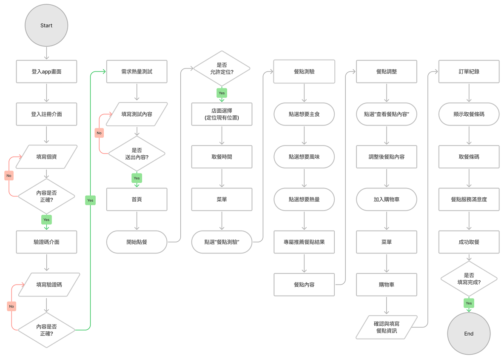
/* 線框圖 */
從草圖到第一個可點擊的原型
繪製初步稿與原型並收集朋友的意見，依循目標優化介面架構：客製化餐點、主菜單、店面選擇、訂單查詢。
客製化餐點與主菜單線框圖
assets/14-wireframe-custom-menu.png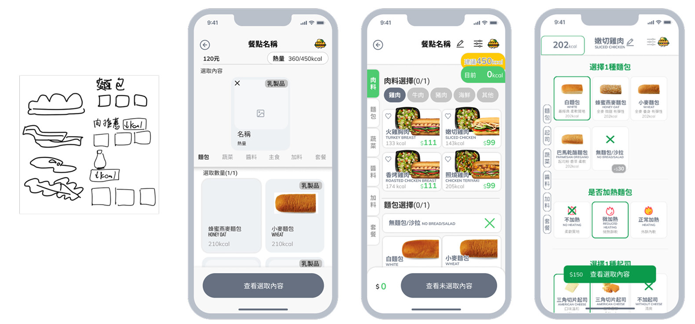
店面選擇與訂單查詢線框圖
assets/15-wireframe-store-orders.png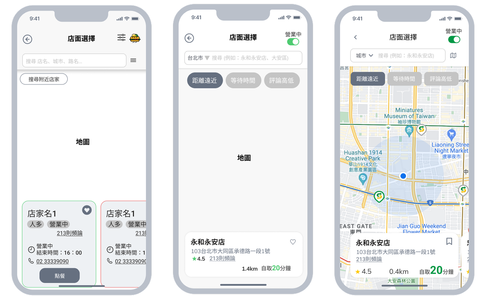
/* 設計指南 */
設計模板與風格
建立設計模板以構建一致性，並在構建新功能時節省時間，改善整體流程和體驗。
/* 設計成果 */
操作流程展示：使用者測試之前
/* 功能 1 */
依需求推薦餐點
依肉料、口味、熱量等需求給予餐點與醬料推薦，幫助 Mia 快速依需求調整客製化餐點
/* 功能 2 */
建議熱量條
配合挑選餐點項目增減熱量，幫助 Mia 快速了解客製化餐點熱量
/* 功能 3 */
掌握店家與訂單即時情況
確認店家等待人數及餐點狀況，避免事後才知道要等很久，幫助 Mia 掌握店家的實際狀況
/* 功能 4 */
快速取餐辨識
除取餐編號外，以顏色幫助店員快速辨識，提升取餐速度，幫助 Mia 減少與人接觸的時間
 Liya Lin
Liya Lin